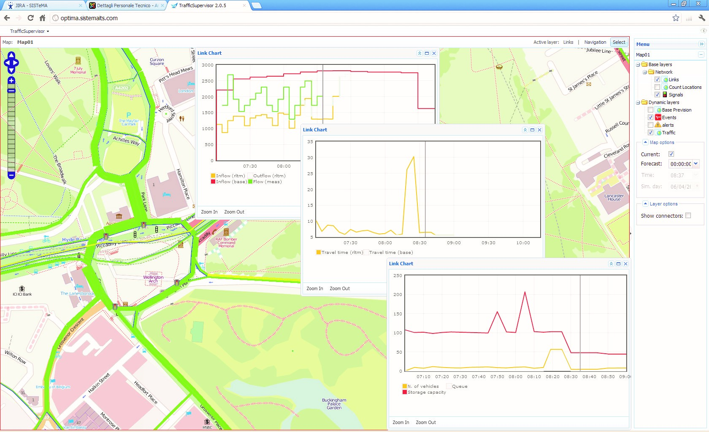

    <div id="vsebina">
    <div class="panel col-xs-12 col-sm-9 ">      
                
           
               <div class="paragraph collapse in col-xs-12 col-sm-8" id="optima"> 
                <h1 class="glavniNaslov">PTV Optima</h1>                 
                <p class="bodytext">PTV Optima ključ je uspješnog upravljanja prometom. Rješenja temeljena na modelu nude precizne informacije o stanju u prometu u stvarnom vremenu za cijelu prometnu mrežu i daju pouzdane prognoze za sljedećih 60 minuta.<br><br>

                Zahvaljujući PTV Optima, centri za upravljanje prometom automatski mogu svojim timovima i korisnicima ceste davati trenutačne i buduće informacije o prometu. Da bi se to postiglo, PTV Optima kombinira dokazano modeliranje izvanmrežnog prometa s realnim podacima i algoritmima. 
                 </p>

                <div  class="embed-responsive embed-responsive-16by9">
                   <iframe class="embed-responsive-item"  src="https://www.youtube.com/embed/t5h8R61Gdzc"  allowfullscreen></iframe>
                   </div>   
                 <br>  
                <p>Ovaj se proces temelji na transportnom modelu stvorenom u PTV Visum koji predstavlja svaki "tipični dan" (npr. radni dani ili vikend) za prometno područje interesa. Modeliraju se transportne usluge i putnička potražnja pomoću matrica potražnje. PTV Visum koristi dinamičku dodjelu prometa za izračunavanje tokova prometa ovisnih o vremenu  i pretvaranje ocjena unutar mreže bazirane na temelju zahtjeva za putovanja i prenosi te informacije u PTV Optimu. U PTV Optima  se ti podaci kombiniraju s on-line podacima kako bi se prilagodili kapacitet, brzina i količina iz osnovnog modela PTV Visuma na trenutne lokalne tokove i uvjete na cesti.
                <br><br>
                Budući da PTV Optima izričito uključuje mrežnu strukturu, dinamiku toka prometa i odabir rute korisnika ceste, ona također pokriva i stanje prometa za ceste bez detektora (prostorna raspodjela), predviđa učinke nepredviđenih incidenata (vremenska raspodjela) i može predvidjeti posljedice čak i neočekivanih događaja. Alat se također može koristiti za procjenu i usporedbu različitih strateških akcija.
                </p>  
                 <h3>Traffic Supervisor</h3>
                 <p>TSupervizor prometa je  internetsko online PTV Optima grafičko korisničko sučelje (GUI). Intuitivno je strukturiran i optimalno pomaže upraviteljima prometa svojim svakodnevnim radom.Supervizor prometa omogućuje:</p>
                 <ul>
                   <li>Praćenje trenutnog stanja prometa na temelju karata</li>
                   <li>Kreiranje, uređivanje i upravljanje objektima i događajima na temelju mape i popisa</li>
                   <li>Procjena raznih scenarija</li>
                   <li>Konfiguracija automatskih upozorenja i obavijesti</li>
                 </ul>

                 <a href="_slike/Screenshot_PTV_Optima_06.jpg" target="_blank" ></a>
             </div>           
<!--............................................... -->
              <div class="paragraph collapse col-xs-12 col-sm-8" id="prednosti" > 
              <h1 class="podNaslov">Predviđanje prometa u relanom vremenu</h1> 
              
              <h3>Predviđanja prometa u stvarnom vremenu</h3>   
               <p class="bodytext">Upravljanje prometom krije sve složenije izazove. Postavite upravljanje prometom u budućnosti i oslonite se na rješenje koje reagira na vašu mrežu. Pratite cijelu mrežu unatoč malom broju mjernih podataka i primajte pouzdane prognoze za promet do 60 minuta - čak i za nepredvidive situacije.</p> 
               
              <h3>Pouzdana pomoć u odlučivanju</h3><p>
               Stvarajte različite strategije upravljanja prometom izvan mreže upotrebom pojedinačnih KPI-a i testirajte ih u virtualnom okruženju. To stvara povjerenje pomoću formuliranih mjera i pruža vašem timu planiranje pouzdanosti u slučaju nužde. Stoga ste u mogućnosti izvući najviše iz raspoloživih resursa i otvoriti nove perspektive.
              </p>
              
               <h3>Radno okruženje prilagođeno korisniku</h3><p>
               Pregled slabih točaka na mreži na prvi pogled, zahvaljujući  kartografskim prikazima, razine uslužnosti prikazane u različitim bojama i smislenim grafovima. Suvremeno sučelje PTV Optima također vam omogućuje intuitivno stvaranje, uređivanje i upravljanje predmetima i događajima. Standardne tehnologije i komunikacijski protokoli kao što su WMS i WFS omogućuju brzo širenje pomoću uključivanja i ugradnje novih vanjskih funkcija kao i podataka koje je moguće vizualizirati. 
              </p>
              
                <h3>Integracija u postojeće strukture</h3><p>
              Odaberite softver koji se uklapa u postojeću IT infrastrukturu. PTV Optima može se optimalno povezati s vašim prometnim računalima, kao i alatima za promatranje i kontrolu prometa. Osim toga, otvorena sučelja omogućuju besprijekornu integraciju u veća softverska rješenja. 
               </p>
               
                <h3>Snažna podrška</h3><p>
               Postanite član naše velike međunarodne korisničke zajednice. Iskoristite naš kvalificirani i posvećen tim za podršku, naše profesionalne usluge i sastanke korisnika, osiguravajući visoku razinu razmjene znanja.
                </p>

              
              </div> 

<!--............................................... -->
              <div class="paragraph collapse col-xs-12 col-sm-8" id="demoVerzija">
              <h1 class="podNaslov">Demo verzija</h1>            
               <p class="bodytext">Isprobajte demo verziju i upoznajte PTV software!</p> 
               <div id="demoVerzija">
                <a id="mail" href="form.html">DEMO VERZIJA</a>
              </div>                
              </div>   
             
 <!--............................................... -->                  
          <div class="col-xs-11 col-sm-4">
            <aside>             
              <div id="pdfji">
                <b>Dodatne inforamcije:</b>
                <div class="pdf"><a href="_ostalo/BRO_PTV-Optima_EN.pdf" target="_blank"><i class="fa fa-file-pdf-o" aria-hidden="true"></i>  PTV Optima Brochure</a></div>
                 <div class="pdf"><a href="_ostalo/SUC_PTV-Optima-in-Piedmont-Region_EN.pdf" target="_blank"><i class="fa fa-file-pdf-o" aria-hidden="true"></i>  PTV Optima Piedmont</a></div>                              
              </div>

              <div>
                <a id="mail" href="mailto:info@appia.si" target="_top">Kontaktirajte  nas!</a>
              </div>
              <div id="demoVerzija">
                <a id="mail" href="form.html">Demo verzija</a>
              </div>
              <br>
              <div class="infoBox" id="distributer">                   
               <b id="kontaktDistributerjaNaslov">Kontakt distibuterja</b><br>
               <a href="http://www.appia.si/" target="_blank">Appia d.o.o </a> <br>
               telefon:+386 1 524 05 20<br>
               E: <a href="mailto:info@appia.si" target="_top">info@appia.si</a><br>
              </div>
            </aside>
          </div> 
    </div> <!--/PANEL  -->   
    </div><!--/VSEBINA  -->  